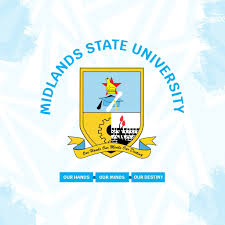

Experience
 Midlands State University Intern
Microsoft
August 2022 - July 2023
Fitness Center Monitor
Amherst College
May 2022 - May 2024 (2 years 1 month)
- Technical Problem Reporting: Monitored and reported equipment issues, maintaining operational efficiency and safety.
- Quality Assurance and Maintenance: Cleaned and observed fitness equipment, preventing damage and ensuring facility integrity.
- Emergency Response: Provided assistance during injuries, demonstrating the ability to act quickly and effectively in emergencies.
- Platform Management: Assisted in managing the sign-up platform and enforced scheduling rules, showcasing organizational and technical skills.
- Policy Enforcement: Maintained adherence to fitness center schedules and policies, ensuring smooth and compliant operations.
 Math Grader
Math Grader
Amherst College
Jan 2024 - May 2024 (5 months)
- Evaluated and graded student assignments with accuracy and fairness.
- Provided constructive feedback to students to aid in their academic development.
- Collaborated with faculty to ensure consistent grading standards and practices.
Math Teaching Assistant
Amherst College
Sep 2023 - Dec 2023 (4 months)
- Holding evening help sessions
- Assist with grading
- Develop study guides and other materials for student use
 Explorer Intern
Explorer Intern
Microsoft
May 2023 - Aug 2023 (4 months)
- Enhanced suggestion ranking system for the Edge browser, leading to improved address bar customization, increased user retention, and increased Bing revenue
- Collaborated with cross-functional teams to develop secure, efficient services, driving innovative technology solutions
- Utilized technical expertise throughout the product development lifecycle, from concept to deployment, ensuring high-quality deliverables
Math Teaching Assistant
Amherst College
Sep 2022 - May 2023 (9 months)
- Holding evening help sessions
- Assist with grading
- Develop study guides and other materials for student use
- Identify students who may be in need of academic support
 Research Assistant, Self-driving Cars
Research Assistant, Self-driving Cars
Columbia University
Jun 2022 - Aug 2022 (3 months)
- Received a Meiklejohn grant to carry out research on program synthesis
- Wrote code to control the motion of a self-driving car in a CARLA simulator and underwent code quality reviews as part of a team
- Refactored code before running Temporal Stream Logic synthesis (TSL) and wrote TSL specifications
- Attended regular standups to report on the progress of research and to provide feedback and advice to peers on research progress
Healthy Herd Advocate
Amherst College
Feb 2022 - May 2022 (4 months)
- Public Health Promotion: Promoted and educated the Amherst College community on COVID-19 safety protocols and best practices.
- Active Listening: Utilized specialized training in active listening to address concerns and provide support.
- Resource Referral: Referred individuals to appropriate on-campus resources, ensuring comprehensive support.
- Safety Enforcement: Monitored compliance with COVID-19 safety measures, including mask-wearing in public spaces.
- Anti-Racist and Anti-Oppressive Practices: Applied an anti-racist and anti-oppressive lens in all peer interactions and interventions.
- Team Collaboration: Worked effectively with HHA team members, fostering a positive and inclusive environment.
- Reliable Attendance: Consistently attended scheduled shifts, demonstrating reliability and dedication.
- Effective Communication: Participated in regular ZOOM updates with supervisors, ensuring clear and ongoing communication.
- Conflict Resolution: Intervened to resolve conflicts and ensure adherence to safety protocols in a respectful manner.
 Google Africa Developer Scholar
Google Africa Developer Scholar
Google developers
Aug 2021 - May 2022 (10 months)